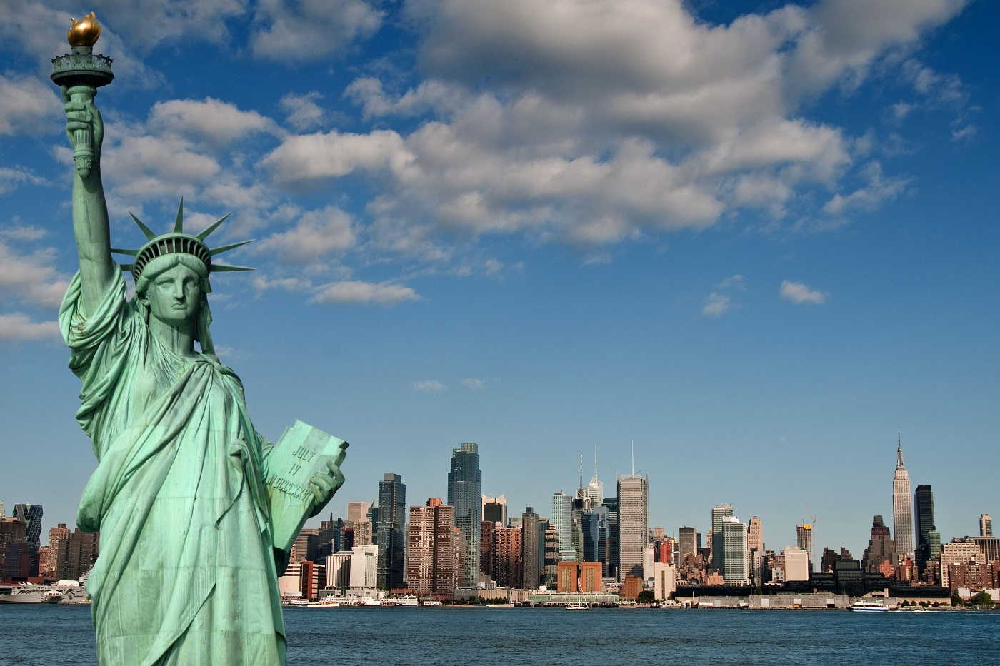

Столица — город Вашингтон (округ Колумбия), а самым крупным по численности населения является город Нью-Йорк. Соединённые Штаты граничат на севере с Канадой, на юге — с Мексикой, также имеют морскую границу с Россией на западе. Омываются Тихим океаном с запада, Атлантическим океаном — с востока и Северным Ледовитым океаном — с севера. Соединённые Штаты Америки были образованы в 1776 году при объединении тринадцати британских колоний, объявивших о своей независимости. Война за независимость продолжалась до 1783 года и окончилась победой колонистов. В 1787 году была принята Конституция США, а в 1791 — Билль о правах, который существенно ограничил полномочия правительства в отношении граждан. В 1861 году противоречия между рабовладельческими южными и промышленными северными штатами привели к началу четырёхлетней Гражданской войны. Следствием победы северных штатов стал повсеместный запрет рабства, а также восстановление страны после раскола, возникшего при объединении южных штатов в Конфедерацию и объявлении ими независимости.
Ста́туя Свобо́ды[1] (англ. Statue of Liberty, полное название — «Свобо́да, озаря́ющая мир», англ. Liberty Enlightening the World) — колоссальная скульптура в стиле Наполеона III, или стиле Второй империи, расположенная в США на острове Свободы, находящемся в Верхней Нью-Йоркской бухте примерно в 3 километрах к юго-западу от южной оконечности острова Манхэттен. Была сооружена как подарок США от Франции ко Всемирной выставке 1876 года и столетию американской независимости (на выставке был показан только факел статуи). Завершённую статую США получили только в 1886 году. Является национальным памятником США. С 1984 года входит в список Всемирного наследия ЮНЕСКО. Статуя Свободы — второй по высоте маяк страны (после Мемориала Победы Перри и мира во всём мире, высота которого составляет 107 м), однако она выполняет световую навигационную роль для морских судов как свою вторичную функцию, поэтому в списки маяков страны её не включают.
Вторая Страница